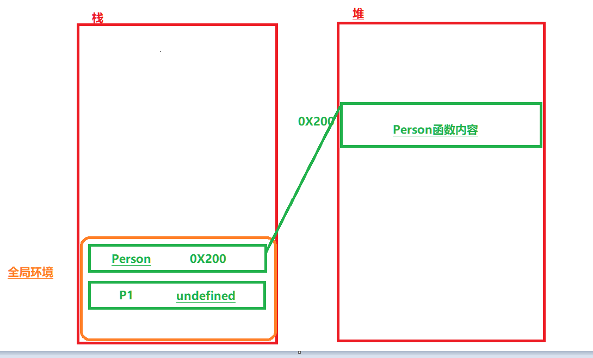
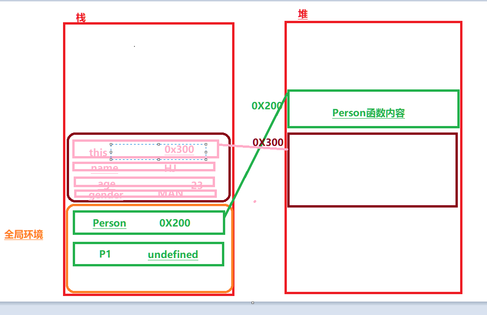
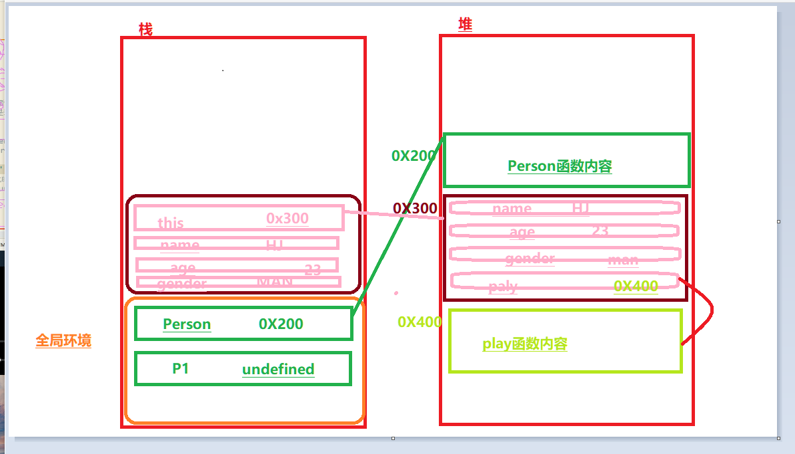
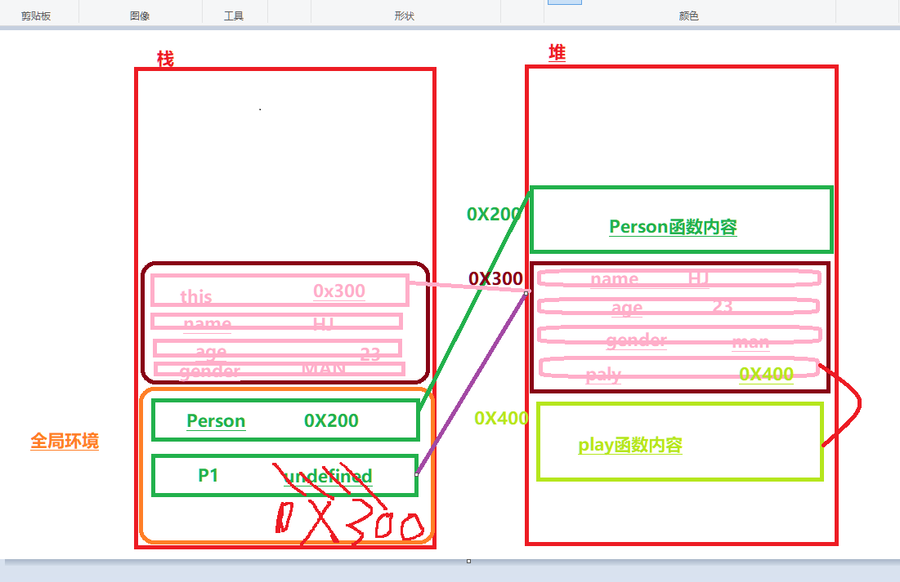
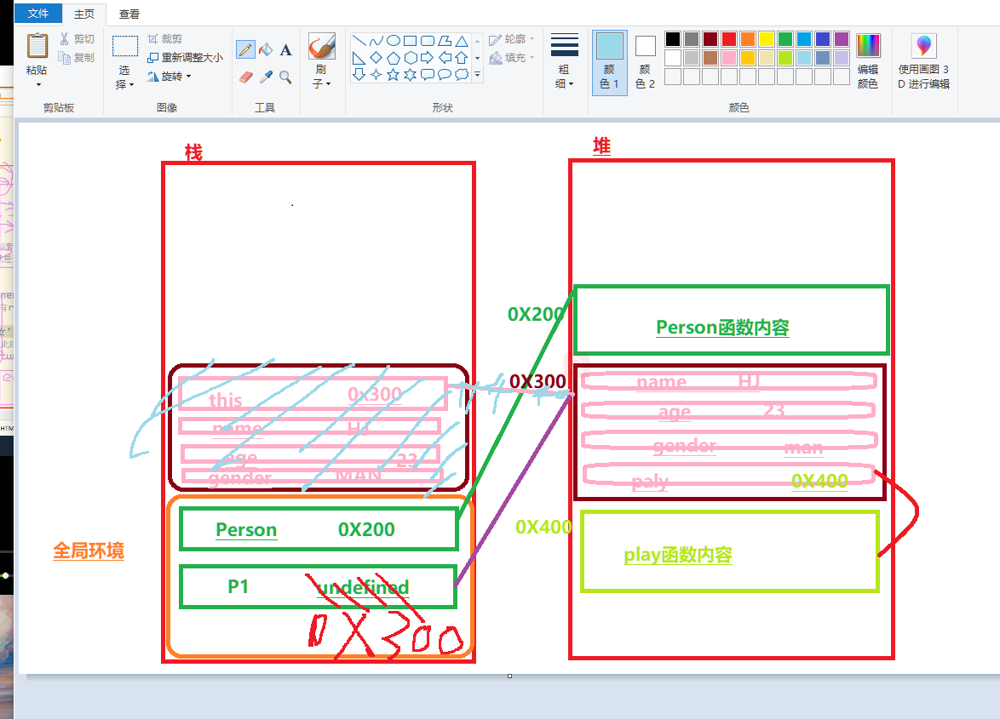

第一步,程序执行,创建全局环境和预解析
第二部:开始执行代码,遇见Person()函数定义,进行堆内存和栈内存绑定,遇见var p1 变量,类型undefined
第三步:遇见p1 = new Person(xxxx) ; Person()以构造函数进行调用, 创建函数环境,预编译,和关键的堆内存空间开辟和this指向改变,this指向默认指向window,但是由于是构造函数改变,因此this指向变成将来实例化对象堆内存空间首地址，Person函数开始执行,创建了三个局部变量name age gender
第四步:this指向将来实例化对象,接下来进行赋值操作,this.name=name .......在堆内存中开辟对象属性和属性值,而this.play是(函数)对象数据类型,需要再在堆内存中开辟新的空间在装载paly函数内容,然后让对象堆内存中的paly属性指向play函数内容(内存间没有嵌套关系)
第五步:构造函数 返回实例化对象 给p1 (返回实例化对象堆地址首地址作为整个函数表达式的值 并 赋值给p1)
第六步:构造函数结束,回收函数环境,程序继续执行
/* function Person(name,age,gender){ this.name = name; this.age = age; this.gender = gender; this.play = function (){ console.log("play"); } play = function (){ //全局函数 console.log("play"); } } 普通函数中 play 和 this.play 的区别 普通函数 this.play this指向window, this.play代表play是window对象的一个属性 ,只不过属性值是对象数据类型的函数,所以需要新开辟堆内存 而普通函数中的play 直接定义了一个函数,因为该函数play即不是var来的局部变量也不是形参也不是已经存在的全局变量, 是在函数内部创建了一个全局函数 注意形参,实参,变量之类的都是在栈内存里面,因为全局环境和各种函数环境都在栈内存,而形参,实参,变量的值 根据数据类型不同存放位置也不同(基本-栈 ,对象-堆且变量值为堆首地址) 所以this.play 中this 指向window时候,window.paly代表着play这个属性在window的堆内存中,而this在全局变量中指向window堆内存 ！！！！属性以及其值一定是在堆内存中存储的. 因为对象数据内容在堆内存中 */